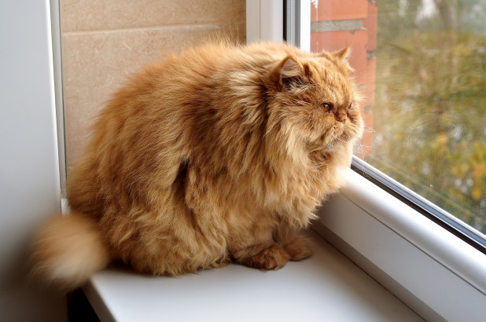

Tabby Garcia
Tabby, yes, like the cat. I am from Houston and have been living in Austin for 4 years now. I have a degree in science and somehow that ended me up in the service industry as a bartender. I love to be outdoors, traveling, eating, sleeping, and hanging out with people I love. Introvert, but do enjoy going to shows and dancing from time to time. I hoping to gain a lot of skills in this class and move on to bigger and better things.